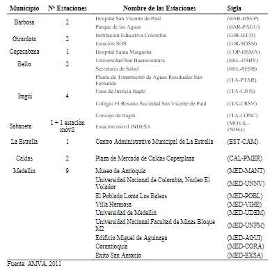

la calidad del aire en Medellín se ha convertido en los últimos 10 años, uno de los aspectos más relevantes para las autoridades locales,con la implementación de un Plan de Descontaminación a mediano, largo y corto plazo para el manejo de episodios críticos del Valle de Aburrá,orientadoa lograr cambios estructurales para la solución permanente de la contaminación atmosférica con todoslos actores involucrados.La contaminación de aire está asociada con los porcentajes de emisión anual y 24 horas de contaminantes como óxidos de azufre (SOx),óxidos de nitrógeno (NOx), ozono (O3), gas carbónico (CO2), material particulado respirables (PM10), material particulado de fracción fina (PM2.5) generados a nivel industrial y por el parque automotor.
La calidad del aire se evalúa por medio de los niveles de inmisión, que vienen definidos como la concentración media deun contaminante presente en el aire durante un período de tiempo determinado. La concentración del contaminante a nivel del suelo varía como consecuencia del desequilibrio entre las emisiones de las múltiples fuentes de origen natural o antropogénico; la dispersión y dilución y la eliminación a través de los procesos de autodepuración por deposición, precipitación y absorción por el suelo, el agua y la vegetación. La medición de la concentración de los contaminantes es importante para establecer su situación frente a los niveles máximos establecidos para proteger principalmente la salud y el bienestar de los seres humanos con un margen adecuado de seguridad.
En el Valle de Aburra se encuentra Medellín y toda el Área Metropolitana del Valle de Aburra, presenta una condición topográfica desfavorable, es decir, la ciudad se encuentra en una depresión profunda rodeada de altas montañas con alturas aproximadas de 1200 metros que impiden que se presente una correcta circulación del aire, debido a que la capa límite del valle está a 500 metros aproximadamente,generando el fenómeno de inversión térmica. Este fenómeno es un proceso natural que afecta a la circulación del aire en las capas bajas de la atmósfera. El aire suele estar en constante movimiento, con las capas más calientes en la parte inferior de la atmósfera y las más frías en la parte superior. Cuando ese ciclo se interrumpe, se forma una capa de aire frío que queda inmóvil sobre el suelo e impide la circulación atmosférica regular y para el caso de Medellín, se intensifica con el fenómeno del niño, que, para el mes de marzo de 2017, se pasó de alerta amarilla a roja por contaminación del aire en Medellín y elValle de Aburra.

Los Sistemas de Vigilancia de Calidad del Aire, SVCA,se establecen con el objeto de determinar las concentraciones ambientales del nivel de inmisión de contaminación del aire, para tal fin, se requiere depersonal calificado, contar con programas de mantenimiento preventivo y correctivo de los equipos, procedimientos estandarizados, y un sistema de administración de información que permita un control de calidad eficaz y eficiente de los datos (IDEAM, 2016), entre el 2011 y 2014 21 autoridades contaban con SVCA, dentro de ellas AMVA, siendo el IDEAM la entidad encargada de administrar el Subsistema de Informaciónsobre Calidad del Aire –SISAIRE, que hace parte del Sistema de Información Ambiental para Colombia –SIAC y es la encargada de la información de los SVCA del país, fundamental para la formulación de políticas y estrategias tendientes a la prevención y control de la contaminación atmosférica, creada mediante la Resolución651 de 2010 del MADS(Ministerio de Ambiente, Vivienda y Desarrollo Territorial, 2010)
El Índice de Calidad del Aire –ICA, representa una herramienta muy útil para comparar los niveles de contaminación en diferentes estaciones de monitoreo que pertenecen a un Sistema de Vigilancia de Calidad del Aire –SVCA. Es un indicador de la calidad del aire diaria que permite informara la poblaciónde forma sencilla respecto a las condiciones de calidad del aire en su región, mediantelainterpretación de los niveles de las concentraciones registradasy su efecto en la salud, siendo posible gracias a que el indicador permite hacer una correlación entre los niveles de contaminación y los efectos sobre la salud(ÁreaMetropolitana del Valle de Aburrá, 2016).ElIndicador delÍndice de Calidad del Aire ha sido desarrollado por Agencia de Protección Ambiental de los Estados Unidos U.S. EPA, mediante eldocumento Technical Assistance Document for the Reporting of Daily Air Quality –the Air Quality Index (AQI) documento EPA-454/B-09-001 de febrero de 2009 y fue adoptado por Colombia según el Protocolo para el Monitoreo y Seguimiento de la Calidad del Airedel Ministerio de Ambiente Vivienda y Desarrollo Territorial. (MAVDT, 2010)Los contaminantes del índice nacional de calidad del aire, se establece teniendo en cuenta los contaminantes criterio que son monitoreados en el país, las características de los combustibles que se distribuyen y los equipos que actualmente se encuentran en las SVCA. El ICA incluye los siguientes contaminantes: Monóxido de Carbono(MO), Dióxido de Azufre(SO2), Dióxido de Nitrógeno(NO2), partículas menores a 10 micrómetros PM10(material particulado con un diámetro aerodinámico menor o igual a 10 micrómetros nominales), PM2.5(material particulado con un diámetro aerodinámico menor o igual a 2,5 micrómetros nominales y Ozono (O3)Troposférico(Resolución 610, 2010). El ICA es un valor adimensional, se calcula según el modelo desarrollado por la EPA, lleva una escala numérica entre 0 y 500 (para valle de Aburra va hasta 300), el cual se correlaciona conuna escala cualitativa de calidad del aire y esta a su vez con los efectos de lasalud. En la tabla 1, seaprecia la correlación entre las concentraciones de contaminantespara PM10 y PM2.5y las categorías de calidad del aire definido por lainformación reportada por la EPA (MAVD, 2010)

Índice de Calidad del Aire de la US EPA, actualización 2013.
El valle de Aburrá cuenta con 25 estaciones de monitoreoen los 10 municipios distribuidas por sus características topográficas y climatológicas delimitando el volumen de aire determinando un comportamiento similar dando fenómenos de transporte y transformación de los contaminantes de manera generalizadamostrando patrones de circulación de vientos (AMVA, 211)
Los problemas de salud pública y el incremento de los gases de invernadero, son generados especialmente por el parque automotor, razónimportantepara quelas agencias de control de contaminaciónevalúen dichasemisiones para formular los planes que vayan en pro de la calidad del aire (Kota, Zhang, Chen, Schade, & Ying, 2014).La figura 1,muestra el inventario de las fuentes móviles para el Valle de Aburrá entre 2005-2015 observándose un incremento del 35.46% para el último año. En el 2005, 478.000 automotores fueron matriculados y 1.347.736 en 2015. En este año los automóviles y motosrepresentaron el 90 % del parque automotor y el 85.77% en 2005. La motoes uno de los medios de transporte más utilizados en el Valle de Aburrá, aumentándose las ventas en este periodo en un 19.57 %(139.00-710.186), equivalente a 57.118motos/año. El uso del automóvil ocupa el segundo lugar con un incremento del49.56 %,para 2015 proporcional a 27.576vendidos/año y los buses el medio que tiene el más bajo promedio con una ampliación de 1999 vendidos es los diez años (Medellín como vamos. (2016). A enero de 2017, seobservó elascenso de 121.481automotoresen los dos últimos añossubiendo de 1.349.736 a1.469.217enuna trama vial estrechay con pocas posibilidades de expansión (Junta Metropolitana del Valle de Aburrá, 2016).
![]()
Incremento del parque automotor 2005-2015 Valle de Aburrá.
Grupos sensibles como adultos mayores y personascon factores de riesgo de padecer enfermedades del corazón o un ataque cerebralo pulmonar, pueden tener mayor riesgo de incrementar estas afectaciones al ser más susceptible a la contaminación por partículas finas PM2.5que se encuentran en la neblina, el humo y el polvo, y a vecesen el aire que parece limpio, por eso se recomienda evitar hacer ejercicio cerca de vías muy transitadas o zonas industrialestrasladándolas al interior, seguir las recomendaciones dadas por las autoridades ambientales para protegerse de los efectos pueden causar a la salud y estar más pendiente de los pronósticos delos niveles de contaminación del aire a través de los medios de comunicación como televisión, radio, periódicos locales y redes sociales, ya que la mayoría de las veces la población se expone por no informarse. Desde el 2015,el Valle de Aburrá haenfrentado situacionesde contingencia ambiental superando los nivelesdiarios de emisiones dePM2.5establecidos por la autoridad regional para la calidad del aire, motivo por el cual la ejecución de un Plan de Descontaminación del Aire, de la mano del Clean Air Institute proyectan metas de descontaminación para el año 2030, con compromisos para todos los implicados en esta problemática como el parque automotor, zona industrial, la quema de combustible y desechos realizando no sólo un control estricto de la autoridad en el cumplimiento de los acuerdos, sino también que el gobierno nacional sea más exigente con los que infringen la norma. Los niveles de las emisiones de fuentes móviles y fijas y la topografía del terreno del Valle de Aburrá, fueron causas concretas para la puesta en marcha de los planes de contingenciaa mediano, largo y corto plazodel Protocolo para el Manejo de Episodios Críticos de Contaminación del Aire,como reducción delos niveles de exposición de la población facilitando acceso a la información, recomendaciones y eventualmente, implementación de medidas de restricción durante el periodo que duren estos eventos.Lo anterior con el objeto de proteger la salud de la poblacióndepatologías con muerteprematura, bronquitis y afecciones respiratorias en el caso del PM2.5,tos, reducción de las defensas en el organismo, irritaciónen ojos y garganta paraPM10atribuibles a estos factores. El manejo de los niveles de contingencia atmosférica para concentraciónde contaminantes ytiempos de exposición, sehaestablecido en la Resolución 610 de 2010 con los nombres de prevención, alerta y emergencia al encontrarse porencimade los estándares internacionales(EPA) y nacionales. La contaminación de aire en el caso de Medellín es más grave debido a su condición topográfica que actúa como un tapón impidiendo la libre circulación del aire y,por ende, cualquier tipo de combustión que se presente puede quedarse detenida por días en la atmosfera incrementando notablemente la vulnerabilidad de las personas frente a afecciones respiratorias
- Tomada de: Referencia1
- Tomada de: Referencia2